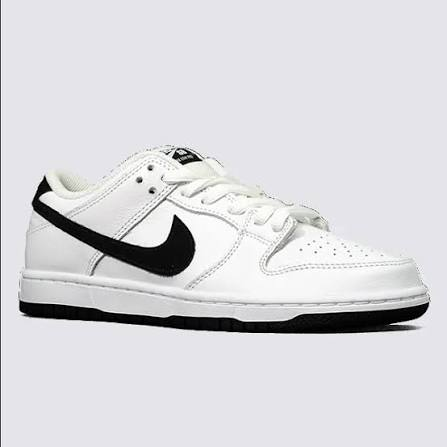

Estudo de Caso Acadêmico
Iniciar Pesquisa Histórica
A Força do Swoosh no Mercado Global
JUST DO IT.
Uma análise sobre a empresa sediada em Beaverton, Oregon, que conta com mais de 77.800 funcionários ao redor do mundo.
